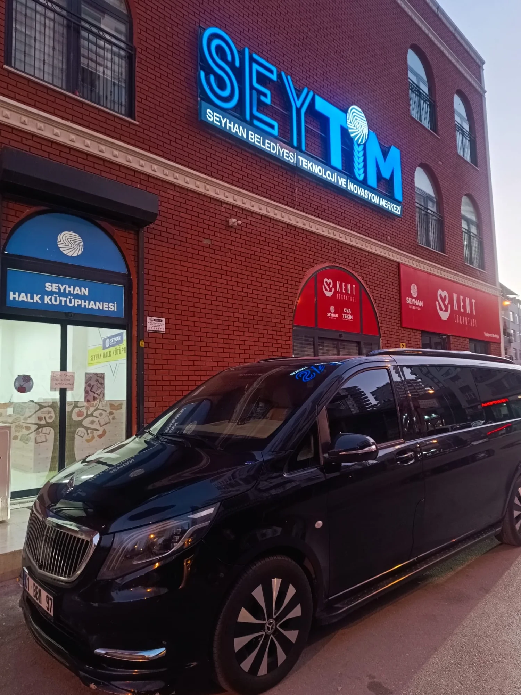
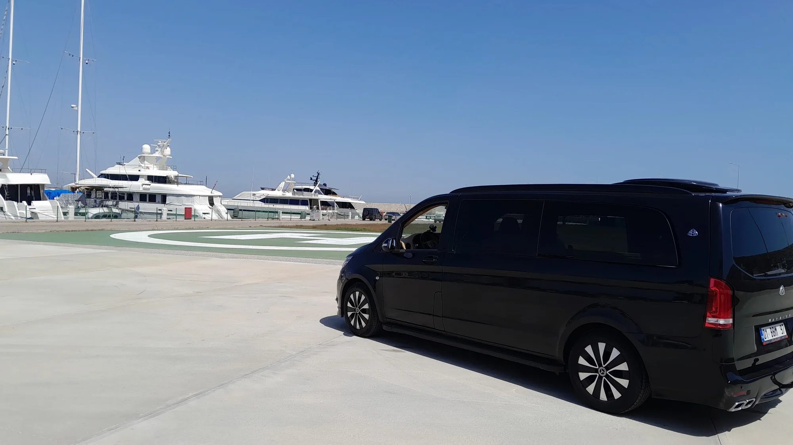
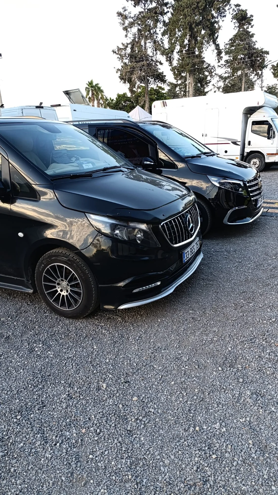
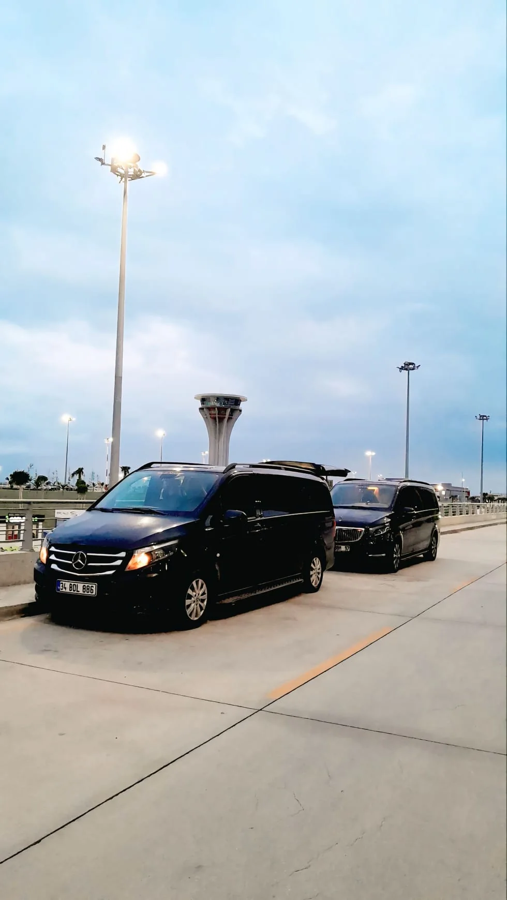
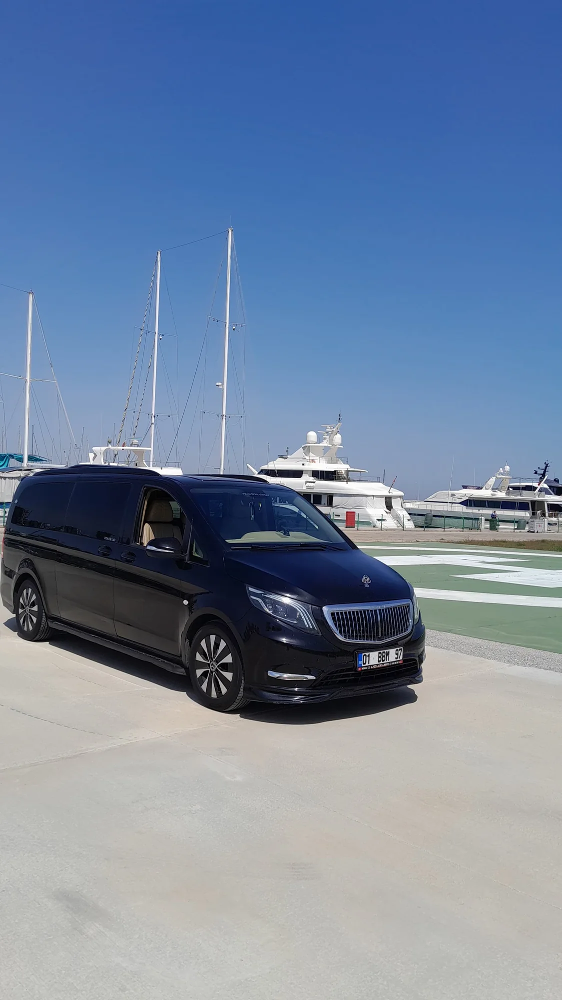
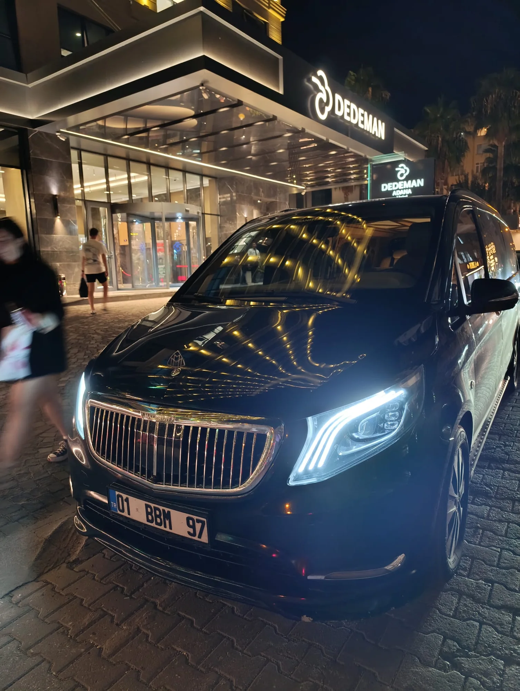

Mersin Şehir İçi VIP Transfer
Yenişehir, Mezitli, Toroslar, Tarsus, Erdemli ve Silifke dahil Mersin içi transfer planı.
Ayrıntıları inceleyin
Şehir içi yolculuklardan havalimanı ulaşımına kadar transfer seçeneklerimizi inceleyin.
Her hizmetin ayrıntılarını kendi sayfasında inceleyebilir, rezervasyon için telefon veya WhatsApp üzerinden ekibe ulaşabilirsiniz.

Yenişehir, Mezitli, Toroslar, Tarsus, Erdemli ve Silifke dahil Mersin içi transfer planı.
Ayrıntıları inceleyin
Mersin’den Türkiye’nin farklı şehirlerine özel şoförlü ulaşım.
Ayrıntıları inceleyin
Mersin ile Çukurova Uluslararası Havalimanı arasında özel ulaşım.
Ayrıntıları inceleyinŞirket yöneticileri, iş ortakları ve özel konuklar için planlı ulaşım.
Ayrıntıları inceleyin
Düğün, nişan, toplantı ve organizasyonlar için VIP araç ve şoför seçeneği.
Ayrıntıları inceleyin
Gün boyu süren programlarınız için size özel şoförlü araç seçeneği.
Ayrıntıları inceleyinGüzergâh ve tarih bilgilerinizi paylaşarak uygunluk hakkında bilgi alın.